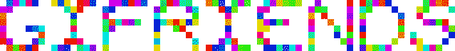

Superbudda presents an exhibition by New York GIF Collective, GIFRIENDS, titled where r u. Gifriends, consisting of Michael Fivis, Marisa Gertz, Peter Marquez and Alex Thebez, has been making GIFs together since 2010.
Technology, so we are told, is disconnecting us from reality. We're too dependent on the network, addicted to our devices, overwhelmed, unable to focus, and uninterested in forming meaningful relationships with real people.
Maybe. But we're living it another way. Untethered to one time and one place, our experience is layered and elastic. It's multi-faceted, literally. Facets of our relationships, experiences, and emotions travel with us from mind to machine and back again.
These GIFs are portals into a layered, spontaneous, all-at-once way of living, of technology and biology working together to create a reality, augmented, shaped, and amplified. These small facets of everyday life are fragmented yet connected, commonplace yet worthy of observation.
where r u
im here
We are 
That's Alex Thebez, Marisa Gertz, Michael Fivis, and Peter Marquez, if you're curious.
Check out our other projects on giftedtogether.com.